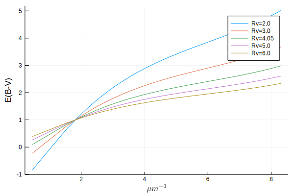

Color laws
The following empirical laws allow us to model the reddening of light as it travels to us. The law you use should depend on the type of data you have and the goal of its use. ccm89 is very common for use in removing extinction from stellar observations, but cal00, for instance, is suited for galaxies with massive stars. Look through the citations and documentation for each law to get a better idea of what sort of physics it targets.
Usage
julia> ccm89(4000., 3.1)
1.464555702942584
These laws can be applied across higher dimension arrays using the . operator
julia> ccm89.([4000., 5000.], 3.1)
2-element Array{Float64,1}:
1.464555702942584
1.1222468788993019
these laws return magnitudes, which we can apply directly to flux by mulitplication with a base-2.5 logarithmic system (because astronomers are fun):
To make this easier, we provide a convenient redden function for applying these color laws to flux measurements.
julia> wave = range(4000, 5000, length=4)
4000.0:333.3333333333333:5000.0
julia> flux = 1e-8 .* wave .+ 1e-2
0.01004:3.3333333333333333e-6:0.01005
julia> redden.(flux, wave, 0.3)
4-element Array{Float64,1}:
0.006698646015454752
0.006918253926353551
0.007154659823737299
0.007370491272731541
Advanced Usage
The color laws also have built-in support for uncertainties using Measurements.jl.
julia> using Measurements
julia> ccm89.([4000. ± 10.5, 5000. ± 10.2], 3.1)
2-element Array{Measurement{Float64},1}:
1.4646 ± 0.0033
1.1222 ± 0.003
and also support units via Unitful.jl and its subsidiaries. Notice how the output type is now Unitful.Gain.
julia> using Unitful, UnitfulAstro
julia> mags = ccm89.([4000u"angstrom", 0.5u"μm"], 3.1)
2-element Array{Gain{Unitful.LogInfo{:Magnitude,10,-2.5},:?,Float64},1}:
1.4645557029425837 mag
1.1222468788993019 mag
You can even combine the two above to get some really nice workflows exploiting all Julia has to offer! This example shows how you could redden some OIR observational data with uncertainties in the flux density.
julia> using Measurements, Unitful, UnitfulAstro
julia> wave = range(0.3, 1.0, length=5)u"μm"
(0.3:0.175:1.0) μm
julia> err = randn(length(wave))
5-element Array{Float64,1}:
0.2972879845354616
0.3823959677906078
-0.5976344767282311
-0.01044524463737564
-0.839026854388764
julia> flux = @.(300 / ustrip(wave)^4 ± err)*u"Jy"
5-element Array{Quantity{Measurement{Float64},ùêå*ùêì^-2,Unitful.FreeUnits{(Jy,),ùêå*ùêì^-2,nothing}},1}:
37037.04 ± 0.3 Jy
5893.14 ± 0.38 Jy
1680.61 ± -0.6 Jy
647.598 ± -0.01 Jy
300.0 ± -0.84 Jy
julia> redden.(flux, wave, 0.3)
5-element Array{Quantity{Measurement{Float64},ùêå*ùêì^-2,Unitful.FreeUnits{(Jy,),ùêå*ùêì^-2,nothing}},1}:
22410.8 ± 0.18 Jy
4229.74 ± 0.27 Jy
1337.12 ± 0.48 Jy
554.3349 ± 0.0089 Jy
268.31 ± 0.75 Jy
API/Reference
Helper Functions
DustExtinction.redden — Function.redden(f::Real, λ::Real, Av; Rv=3.1, law=ccm89)
redden(f::Quantity, λ::Quantity, Av; Rv=3.1, law=ccm89)Redden the value f by the value calculated via the given law and total extinction value Av. By default we use Rv=3.1 which is the Milky Way average selective attenuation. Note that λ should be in Angstrom if it is not a Quantity.
DustExtinction.deredden — Function.deredden(f::Real, λ::Real, Av; Rv=3.1, law=ccm89)
deredden(f::Quantity, λ::Quantity, Av; Rv=3.1, law=ccm89)Deredden the value f by the value calculated via the given law and total extinction value Av. By default we use Rv=3.1 which is the Milky Way average selective attenuation. Note that λ should be in Angstrom if it is not a Quantity.
Parametric Extinction Laws
These laws are all parametrized by the selective extinction Rv. Mathematically, this is the ratio of the total extinction by the reddening
and is loosely associated with the size of the dust grains in the interstellar medium.
Clayton, Cardelli and Mathis (1989)
DustExtinction.ccm89 — Function.ccm89(λ::Real, Rv=3.1)
ccm89(λ::Quantity, Rv=3.1)Clayton, Cardelli and Mathis (1989) dust law.
Returns E(B-V) in magnitudes at the given wavelength relative to the extinction at 5494.5 Å. λ is the wavelength in Å and has support over [1000, 33333]. Outside of that range this will return 0. Rv is the selective extinction and is valid over [2, 6]. A typical value for the Milky Way is 3.1
If λ is a Unitful.Quantity it will be automatically converted to Å and the returned value will be UnitfulAstro.mag.
References
O'Donnell 1994
DustExtinction.od94 — Function.od94(λ::Real, Rv=3.1)
od94(λ::Quantity, Rv=3.1)O'Donnell (1994) dust law.
This is identical to the Clayton, Cardelli and Mathis (1989) dust law, except for different coefficients used in the optical (3030.3 √Ö to 9090.9 √Ö).
If λ is a Unitful.Quantity it will be automatically converted to Å and the returned value will be UnitfulAstro.mag.
References
See Also
Calzetti et al. (2000)

DustExtinction.cal00 — Function.cal00(λ::Real, Rv=4.05)
cal00(λ::Quantity, Rv=4.05)Calzetti et al. (2000) Dust Law.
Returns E(B-V) in magnitudes at the given wavelength. λ is the wavelength in Å and has support over [1200, 22000]. Outside of that range this will return 0.
Calzetti et al. (2000) developed a recipe for dereddening the spectra of galaxies where massive stars dominate the radiation output. They found the best fit value for such galaxies was 4.05±0.80.
If λ is a Unitful.Quantity it will be automatically converted to Å and the returned value will be UnitfulAstro.mag.
References